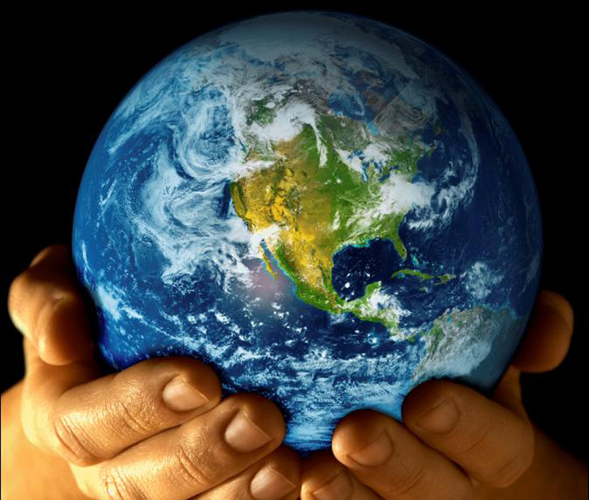
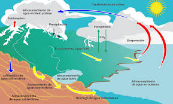
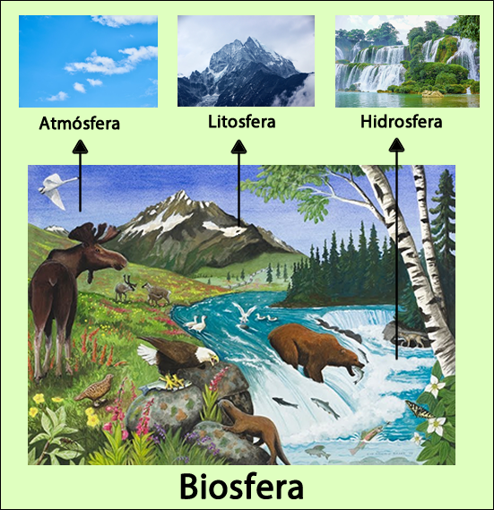

CAPÍTULO 1. EL PLANETA TIERRA COMO ECOSISTEMA
La Tierra se formó aproximadamente hace 4.550 millones de años a partir de la nebulosa protosolar, junto con el Sol y los demás planetas del Sistema Solar (Colebtook Michael, 2006). La Tierra ocupa el cuarto lugar en tamaño de los planetas del sistema solar y es el tercero en orden de distancia con respecto al Sol. Los rasgos más sobresalientes de la Tierra son los siguientes:
|
 |
La Tierra se formó aproximadamente hace 4.550 millones de años a partir de la nebulosa protosolar, junto con el Sol y los demás planetas del Sistema Solar (Colebtook Michael, 2006). La Tierra ocupa el cuarto lugar en tamaño de los planetas del sistema solar y es el tercero en orden de distancia con respecto al Sol. Los rasgos más sobresalientes de la Tierra son los siguientes:
- Es el único lugar del universo donde se ha confirmado hasta ahora que existe vida.
- Ha evolucionado mediante procesos geológicos y biológicos.
- Su superficie externa se divide en litósfera e hidrósfera, donde la litósfera está fragmentada en una serie de placas que se desplazan sol:Jre el manto terrestre y se sitúan principalmente en el hemisferio norte. La hidrósfera está constituida principalmente por los océanos.
- Su interior permanece activo, con una gmesa capa de materiales fundidos y un núcleo rico en hierro que genera un campo magnético.
¿Qué es el planeta Tierra?
El primer principio básico de la naturaleza establece que la Tierra es un ecosistema o sistema viviente caracterizado por ser infinito, en homeostasis y sustentable .En 1972 la tripulación del Apolo 17 pudo fotografiar por primera vez a nuestro planeta desde el espacio.
La Tierra es un sistema viviente
La Tierra, llamada también Gaia, es un sistema viviente o ecosistema por sí misma y esta característica está definida por la interacción de los diversos ecosistemas acuáticos y terrestres que la integran (Margulis, 1998) y que al evolucionar mediante procesos geoquímicos (abióticos) y biológicos (bióticos) determinaron las condiciones iniciales apropiadas para el inicio de la vida y la posterior consolidación de la biosfera. (Colebrook Michael, 2006.)
La Tierra es finita en espacio, recursos y sustentabilidad
La Tierra, aunque vasta y rica en recursos, es finita en tamaño, espacio y disponibilidad de recursos.
- Su superficie está cubierta en un 70% por agua (hidrosfera: 1,300 millones de km³).
- 97% es agua salada (océanos).
- 2% es agua dulce en glaciares, pero inaccesible.
- Solo 1% (8.1 millones km³) es agua dulce disponible, de la cual ya se consume un 15%.
- El 30% restante es la litosfera (suelo/corteza):
- 30% áreas polares, desiertos y montañas (inutilizables).
- 32% bosques.
- 25% pastizales.
- 11% transformado en agropecuario.
- Solo 2% ocupado por asentamientos humanos.
La Tierra está en equilibrio u homeostasis
La Tierra como ecosistema se caracteriza porque la biosfera autorregula procesos geofísicos y geoquímicos, manteniendo en equilibrio factores como la temperatura, la atmósfera y la salinidad de los océanos. Esto se explica con la Hipótesis de Gaia, que define esta regulación como homeostasis. Aunque el entorno presenta variaciones constantes (diarias, estacionales o anuales), los ecosistemas tienden a mantenerse en equilibrio dinámico, gracias a mecanismos como la resiliencia, tolerancia e inercia. Sin embargo, este equilibrio no es absoluto, ya que puede alterarse por competencia entre especies, relaciones presa-depredador, limitación de recursos o disturbios. La biodiversidad juega un papel clave en la estabilidad de los ecosistemas, ya que incrementa su resiliencia. Además, al observar a mayor escala (paisaje), la heterogeneidad del sistema ayuda a distribuir el riesgo de desequilibrio.
Estructura y su funcionamiento de la Tierra
El segundo principio básico de la Naturaleza establece que la Tierra es un sistema viviente. Constituido por dos subsistemas: subsistema físico ecosfera y subsistema biológico.
Subsistema físico
El subsistema físico de la Tierra está formado por la atmósfera (aire), la hidrosfera (agua) y la litosfera (suelo). Atmósfera: Composición: 78% nitrógeno, 21% oxígeno, 0.033% dióxido de carbono, vapor de agua y otros gases. Funciones:
|
 |
Subsistema biológico
|  | El subsistema biológico está integrado por los organismos productores. consumidores (primarios. secundarios y terciarios) y desintegradores. En este subsistema se encuentran los materiales y sustancias orgánicas y ocun en las intrarrelaciones e interrelaciones bióticas entre organismos. Las interaccione y procesos abióticos-bióticos que ocurren entre los dos subsistemas constituyen un sistema ecológico llamado biosfera. En la biosfera, los seres vivos autorregulan estas interacciones e intercambios (de energía y materia) y se caracterizan por ser complejas, de amplia escala temporal y am plia distribución espacial (Margulis. l 998: Miller. 1994; Ch iras, 199 1). Los intercambios de sustancias químicas en la biosfera ocurren vía ciclos, llamados ciclos biogeoquímicos. los cuales se caracterizan por presentar dos fases: la fase ambiental. donde el elemento químico está en fonna inorgánica en el suelo, agua y aire: y la fase orgánica, donde el elemento forma parte de los seres vivos (plantas y animales). En el capítulo 2 se estudiarán con detalle los principales ciclos biogeoquímicos. |
CAPÍTULO 2. FLUJO DE ENERGÍA Y CICLOS BIOGEQUÍMICOS
El tercer principio básico de la naturaleza establece que la Tierra es un sistema abierto con respecto al flujo de energía. El Sol, no sólo es el centro del equilibrio gravitacional del sistema solar, sino también es la fuente externa de energía para la Tierra. lo que determina que en cuanto al flujo de energíala Tierra funcione como un sistema abierto (Al faro, etc al 2007). Con base en la Primera Ley de Termodinámica se puede validar que en la Tierra la única fuente de energía es el Sol y que ésta no puede ser creada o destruida, no obstante, y a pesar del conocimiento y tecnologías generadas a lo largo del desarrollo humano. el ser humano no puede crear o destruir la energía, sólo transformarla.
El equilibrio energético de la Tierra
Del total de la energía generada por el Sol, a nuestro planeta llega un 10% como radiación ultravioleta (rayos UV). 45% luz visible y 45% de radiación infrarroja. Esta radiación incidente de diferentes formas y cantidades es suficiente y es el elemento climático más importante. ya que es la fuente de energía de todos los demás procesos biológicos y físicos, condiciona los flujos de energía dentro de los ecosistemas y condiciona la intensidad y frecuencia de los otros elementos del clima (Alfaro, et al., 2007). A partir del Sol se inicia el flujo de energía: la cual viaja a través del espacio y demora de siete a ocho minutos en llegar a nuestro planeta, un 34% es inmediatamente reflejado por las nubes, sustancias químicas y polvo suspendido en la atmósfera y por la superficie terrestre. Del 66% remanente, 42% calienta la atmósfera y la superficie del planeta, 22% evapora el agua y la circula a través de la ecostera y 1% genera los vientos. El 1% restante es capturado por las plantas verdes u organismos fotosintéticos y es utilizado para producir compuestos orgánicos a través del proceso de la fotosíntesis.
Pirámides ecológicas
El balance energético a lo largo de las cadenas tróficas es explicado por la Segunda Ley de Termodinámica, la cual indica que en cada transformación se pierde o disipa energía en forma de calor o en otras palabras la energía inicial se degrada a otra forma de energía menos útil o menos con-centrada, como se detalla en la figura 2.4. El porcentaje de energía transferida de un nivel trófico a otro, varía de 2% a 30%. dependiendo del número de niveles. de las especies y del tipo de ecosistema. Con base en esta ley, el fujo de energía a través de los niveles tróficos de las cadenas alimenticias nos permite determinar las pirámides ecológicas en términos de energía, biomasa y número de individuos, El término de pirámide denota la disminución de las variables: energía. biomasa y número de individuos en el nivel inmediato superior. conforme se avanza a lo largo de la cadena trófica, como consecuencia de la energía perdida por costos de mantenimiento metabólico de los individuos del nivel inferior. Por ejemplo, en lo que respecta a la biomasa total de la Tierra, 85% corresponde a la vegetación, 10% a la fauna y solamente 5% corresponde a biomasa humana (Pidwirny,2006: Leckie, 1999 y World Population Information, 2006).
Ciclos biogequímicos
El cuarto principio establece que la Tierra es un sistema cerrado con respecto al flujo de materia. Lo cual denota que las sustancias químicas son cíclalas a través de complejas vías entre los subsistemas físico y biológico y convertidas en formas útiles (nutrientes o nutrimentos) por una combinación de procesos biológicos, geológicos y químicos que en conjunto son llamados ciclos biogeoquímicos. La figura 2.6 muestra el ciclado de sustancias químicas y el balance energético. La importancia de los ciclos biogeoquímicos es que al ciclar las sustancias las renuevan, purifican y conservan y definen la productividad y sustentabilidad de los ecosistemas. De acuerdo con Miller (1994) hay tres tipos de ciclos biogeoquímicos interconectados: gaseoso, sedimentario e hidrológico. |
Flujo de materia
El ciclaje de sustancias químicas en la biosfera funciona así:
- Fase ambiental: los compuestos inorgánicos del aire, suelo y agua pasan a los organismos productores.
- Productores (plantas): mediante la fotosíntesis transforman compuestos inorgánicos en orgánicos.
- Consumidores: se alimentan de los productores y obtienen esos compuestos orgánicos.
- Desintegradores: al morir productores y consumidores, descomponen la materia orgánica en compuestos inorgánicos que regresan al suelo y atmósfera, cerrando el ciclo.
Este proceso convierte a la biosfera en un sistema cerrado, ya que los seres vivos regulan la velocidad de reciclaje y renovación de materiales químicos.
- De los elementos químicos en la Tierra, 26 forman parte de los seres vivos.
- Los principales son: C, H, O, N, P y S, que constituyen el 95% de la biosfera y se llaman macronutrientes.
- Los demás, requeridos en pequeñas cantidades, se llaman micronutrientes.
Ciclo de oxigeno
El oxígeno (O₂) es el elemento más abundante en los seres vivos y fundamental para la vida.
- Se libera en la fotosíntesis, junto con el almacenamiento de carbono orgánico.
- Forma parte del agua y de todas las moléculas orgánicas.
- Surgió en la Tierra con los organismos fotosintéticos, siendo al inicio tóxico para los primeros unicelulares, pero después se convirtió en la base de un metabolismo más eficiente que el anaeróbico.
El 20% del oxígeno atmosférico es resultado directo de la actividad de los seres vivos. Su ciclo está ligado al del carbono:
- Fotosíntesis: CO₂ + H₂O + energía solar → glucosa + O₂.
- Respiración: glucosa + O₂ → CO₂ + H₂O + energía.
Ciclo de carbono
El ciclo del carbono involucra a las cuatro esferas de la Tierra: litosfera, hidrosfera, atmósfera y biosfera.
- El carbono es esencial para formar carbohidratos, lípidos, proteínas y ácidos nucleicos, ya que todos los compuestos orgánicos están basados en cadenas de carbono.
- El mayor depósito se encuentra en sedimentos y rocas de la corteza terrestre, pero su recambio es muy lento (cientos de años).
- La fuente principal de carbono disponible está en la atmósfera (CO₂ para productores terrestres) y en la hidrosfera (productores acuáticos).
- El CO₂ atmosférico representa el 0.03% del aire.
- Cada año, un 5% del CO₂ es consumido en la fotosíntesis y regresa a la atmósfera mediante la respiración de animales, lo que constituye el ciclo más rápido (≈3 años).
- Las plantas fotosintéticas son la principal fuente de fijación del CO₂ y la base del ciclo del carbono.
- Este ciclo está estrechamente vinculado al del oxígeno, ya que fotosíntesis y respiración relacionan ambos elementos.
Ciclo de nitrógeno
El nitrógeno (N) es esencial para la síntesis de proteínas, ácidos nucleicos (ADN y ARN) y otras moléculas metabólicas.
- Su principal reservorio es la atmósfera, donde constituye el 78% en forma de gas inerte (N₂).
- La mayoría de plantas y animales no pueden usar el N₂ directamente.
- Solo algunas bacterias y algas realizan la fijación del nitrógeno, convirtiéndolo en compuestos asimilables: Nitratos (NO₃⁻),Amonio (NH₄⁺)
- Las plantas absorben estas formas solubles a través de las raíces, y los animales obtienen nitrógeno al consumir plantas o a otros animales.
- En el suelo, gran parte del nitrógeno se encuentra en forma orgánica, como parte de residuos orgánicos, humus y compuestos complejos.
Ciclos sedimentarios
En los ciclos sedimentarios las sustancias químicas o nutrientes circulan entre la corteza terrestre (suelo, rocas y sedimentos de la tierra y del fondo marino), la hidrosfera y los seres vivos. Los nutrientes en estos ciclos generalmente son reciclados a una velocidad demasiado lenta debido a la retención de estos nutrientes por miles o millones de años por las rocas sedimentarias y por no presentar una fase gaseosa. Pertenecen a este tipo de ciclos el fósforo y el azufre.
Ciclo de fósforo
El fósforo es un componente esencial de los organismos. Forma parte de los ácidos nucleicos (ADN y ARN), del ATP y de otras moléculas que tienen PO,'* tomar y que almacenan la energía química. Está en pequeñas cantidades en las plantas, en proporciones de 0.2%, aproximadamente y en los animales hasta el 1% de su masa puede ser fósforo. Su reservorio o depósito en la naturaleza es la corteza terrestre (se puede ver el ciclo en la página Web del texto). manteniendo un ciclo o flujo poco dinámico. De hecho. el ciclo de este elemento en términos prácticos se puede considerar que no tiene salidas, ya que cuando este elemento entra al suelo se transforma en formas más insolubles y permanece inmovilizado (Bertsch. 1992). Asimismo. este elemento con facilidad es arrastrado por las aguas. llega al mar y se sedimenta en el fondo marino, y forma rocas que tardarán millones de años en volver a emerger y liberar de nuevo las sales de fósforo. Por meteorización (intemperización) de las rocas o por la vulcanización (erupción de cenizas volcánicas) queda disponible para que lo puedan tomar las plantas.
Ciclo del azufre
El azufre es imprescindible como micronutriente para los seres vivos. ya que forma parte de las pro-teínas. Los océanos constituyen el depósito más significativo de azufre en forma de sulfato inorgánico en la biosfera. Igualmente, este elemento se encuentra en volúmenes importantes en sedimentos y rocas de la litosfera en forma de minerales de sulfato (CaSO,) y minerales de sulfuro (FeS,). Aunque son posibles varios estados de oxidación, sólo tres forman cantidades significativas de azufre en la naturaleza: sulfuros, azufre elemental y sulfato. También, la forma en que este elemento está presente en el ambiente depende del pH: a valores alcalinos de pH el azufre se encuentra en la forma de sulfuro y a valores ácidos de pH en la forma de sulfuro de hidrogeno (Alfaro, Limón, Martinez, et al., 2007). En condiciones anaeróbicas. las sales de azufre son el sustrato para la reducción del sulfato. Y por tanto en estas condiciones se puede dar el proceso de fotosíntesis basada en azufre, la cual fue el primer tipo de fotosíntesis en la Tierra (Schlesinger, 1991).
Ciclo hidrológico
El ciclo hidrológico describe la circulación del agua entre océanos, atmósfera, litosfera y seres vivos.
- Es el disolvente universal, participa en reacciones químicas (hidratos, hidrólisis, óxido-reducción) y en procesos biológicos.
- Representa del 50 al 90% de la masa de los seres vivos (en humanos: 75% de músculos y cerebro, 83% de la sangre).
- Facilita difusión, transporte de nutrientes, excreción y actúa como termorregulador por sus propiedades térmicas.
- En plantas, ayuda a mantener la estructura y forma celular.
- El ciclo del agua está ligado a otros ciclos biogeoquímicos, transportando nutrientes en los ecosistemas.
- El agua es el único elemento presente en los tres estados físicos en la naturaleza (líquido, sólido, gaseoso).
Etapas principales del ciclo:
- Evaporación: el Sol calienta océanos, ríos y lagos.
- Condensación: el vapor se enfría y forma nubes.
- Transporte: el viento mueve las nubes.
- Transpiración y respiración: seres vivos liberan vapor de agua.
- Precipitación: gotas pesadas caen como lluvia, nieve o granizo.
- Escurrimiento: el agua regresa a ríos, lagos y mares.
- Infiltración: parte se absorbe en el suelo, alimenta plantas o recarga acuíferos.
Regla de la sustentabilidad
Los ciclos biogeoquímicos al ciclar las sustancias las renuevan, purifican y conservan, y a su vez. definen la productividad y sustentabilidad de los ecosistemas. Y los seres vivos desempeñan un papel regulador (velocidad de ciclado y sustentabilidad) y de renovación (biodegradación) de los nutrientes. Las sustancias químicas o nutrientes. no obstante, de ser renovables, son finitos y pueden agotarse o convertirse en factores limitantes cuando las tasas de consumo y contaminación antropogénicas rebasan la tasa de velocidad de ciclado por el cual se conservan y purifican. Con base en esto último, se puede concluir que con el fin de mantener la sustentabilidad de los recursos y productividad de los ecosistemas se debe respetar y cumplir la regla de sustentabilidad, la cual estipula que la velocidad de los procesos de reciclado, renovación, purificación, reemplazo y conservación debe ser SIEMPRE MAYOR que la velocidad de los procesos naturales y antropogénicos de consumo, extracción, contaminación, destrucción, degradación, fragmentación y abatimiento (Alfaro, Limón. Martínez, et al., 2007). |
CAPÍTULO 3. ROL DE LOS SERES VIVOS EN LOS ECOSISTEMAS
El quinto principio de la naturaleza define la función de los seres vivos, que al interactuar con su entorno físico mantienen la estabilidad del planeta y las condiciones para la vida. Este principio se fundamenta en la Hipótesis de Gaia, que fue propuesta por los investigadores James E. Lovelock y Lynn Margulis en 1979. En ella los autores explican que los seres vivos manipulan y regulan el ambiente para el sostenimiento y mejoramiento de la biósfera.
El origen de la vida
Antes de la propuesta de la hipótesis de Gaia, se asumía que la Tierra disponía de las condiciones apropiadas para que la vida se produjera en ella, la cual se adaptó a dichas condiciones existentes (Margulis, 1998). De hecho, la teoría convencional supone que los seres vivos se adaptan a su entorno, pero no lo cambian y que las fuerzas o procesos geológicos explican la evolución de la atmósfe-ra, litosfera y océanos (Lovelock, 2007). Sin embargo, los autores de la Hipótesis de Gaia especifican que a partir de unas condiciones primarias se promovió el inicio de la vida en la Tierra, y que estas primeras formas de vida modificaron el entorno o ambiente físico para promover y conservar la habitabilidad del planeta y las condiciones adecuadas para su existencia y bienestar.
Evolución del planeta Tierra
La composición de la corteza terrestre determinó el ambiente geoquímico en el cual la vida se originó. La abundancia cósmica de los elementos químicos, su distribución en la formación de la Tierra y su capacidad de combinarse y formar compuestos solubles en agua fueron factores determinantes para el surgimiento de la vida. Por consiguiente, los constituyentes primarios de los seres vivos se formaron abióticamente y en la ausencia de oxígeno (Schlesinger, 1991). La validez de esta hipótesis de Gaia se presenta en la tabla 3.1, en la cual se describe el efecto de los seres vivos sobre la composición de la atmósfera en el planeta. Como se muestra en la tabla 3.1, en la primera columna se presentan las características físicas y químicas de las atmósferas de los planetas Venus, la Tierra abiótica o sin vida y Marte.
Evolución de los seres vivos y su impacto en la Tierra
La Tierra primitiva se caracterizó por intensa actividad volcánica, impactos de meteoritos y altas temperaturas. Las erupciones liberaron gases que formaron la atmósfera primitiva. Al enfriarse el planeta (100 °C), el vapor de agua se condensó, originando lluvias intensas que formaron los océanos hace unos 3,800 millones de años.
En esta etapa, el nitrógeno (N₂) se volvió el gas dominante. Los sedimentos en el fondo oceánico crearon las condiciones para el origen de la vida hace unos 3,500 millones de años, con moléculas orgánicas formadas de manera abiótica, en ausencia de oxígeno libre.
- Los primeros organismos fueron anaeróbicos (arqueobacterias y eubacterias), que obtenían energía de compuestos como el metano.
- Luego aparecieron bacterias fotosintéticas que usaban sulfuro de hidrógeno (H₂S).
- Posteriormente, las cianobacterias desarrollaron la fotosíntesis oxigénica, liberando oxígeno (O₂) a la atmósfera. Esto permitió la aparición de organismos aeróbicos y eucariontes.
Productos de los ecosistemas
Los seres humanos obtienen de los ecosistemas bienes o productos que son esenciales para el mantenimiento de la vida. A manera de ejemplo se muestra en la figura 3.2 algunos de los productos que se obtienen de los ecosistemas, como por ejemplo:
- Alimentos, donde se incluye pescado y otros productos del mar, así como animales silvestres.
- Materia prima como: materiales para la construcción, minerales, madera y combustibles.
- Recursos energéticos, como petróleo, carbón y gas natural.
- Medicinas y productos farmacéuticos.
- Materias primas para la elaboración de vestimenta.
- Recursos genéticos para la ganadería y propagación de cultivos.
Servicios fundamentales de los ecosistemas
Un aspecto importante que hasta recientemente había sido poco reconocido y apreciado por el ser humano es que los ecosistemas naturales también le brindan servicios, que son fundamentales para el sostenimiento de la vida, algunos ejemplos de estos servicios son:
- El mantenimiento de la biodiversidad, de la que a su vez se derivan materiales claves para las actividades agrícolas, farmacéuticas e industriales.
- La protección contra la radiación solar de alta energía, como los rayos ultravioleta, que son perjudiciales a todos los seres vivos.
- La limpieza del aire, agua y suelo a través de los ciclos biogeoquímicos.
- La estabilización parcial del clima, por medio de la moderación de los eventos atmosféricos extremos.
Agotamiento de los servicios ambientales
Históricamente los servicios ambientales se han subestimado, ya que no han sido cotizados en el mercado ni comercializados. Lo anterior se debe a que cuando surgió la humanidad, la mayoría de los servicios ambientales de los ecosistemas estaban ya en operación por cientos de miles de años (Daily, Alexander, Ehrlich et al., 1997), que para el ser humano fue fácil percibirlos con fin utilitario y los dio por bien establecidos y tan amplios en su escala que, erróneamente, consideró que los productos y servicios brindados por los ecosistemas, además de gratuitos son invulnerables e infinitos. Actualmente, este concepto erróneo ha propiciado, de manera incomprensible, que las actividades humanas tengan un impacto negativo que puedan alterar estos servicios de un modo irreparable. De hecho, los bienes están siendo degradados o agotados y los servicios ecológicos deteriorados por las actividades humanas al degradar, fragmentar y destruir los hábitats y al introducir especies exóticas; pero el impacto más significativo e irreversible sobre los ecosistemas es la pérdida o reducción de la biodiversidad natural. Dado que la biodiversidad regula y determina los servicios que brindan los ecosistemas (Shahid Naeem, Chair, F.S. Chapin III, Robert Costanza et al., 1999), estos servicios son sensibles a la reducción de la biodiversidad, que conforme disminuye ésta, también se reduce la resistencia de los ecosistemas a los disturbios naturales y antropogénicos, y la dotación de los bienes y servicios se hace más insegura.
Factor limitante y capacidad de carga
El séptimo principio básico de la naturaleza establece que el factor limitante y la capacidad de carga son determinantes en la dinámica poblacional de las especies.
Factor ecológico y rango de tolerancia
Un factor ecológico es todo elemento del entorno (hábitat o nicho) que actúa directamente y al menos durante una etapa del ciclo biológico de los seres vivos. Los factores ecológicos influyen sobre los seres vivos de las siguientes formas: o Eliminan especies de zonas cuyas características climáticas o fisicoquímicas no son apropia-das, de esta forma influyen así la distribución geográfica de las especies. o Determinan las tasas de natalidad y mortalidad de diversas especies, actuando sobre los ciclos de desarrollo y provocando emigraciones, de esta forma influyen de en la densidad de las poblaciones. o Favorecen la adaptación de las especies, vía modificaciones cuantitativas del metabolismo y cualitativas tales como la diapausa, hibernación, estivación y reacciones fotoperiódicas, entre otras. No obstante que las condiciones del entorno nunca son constantes, sino que se caracterizan por una variabilidad de hora a hora, de día a día, de temporada a temporada y de año a año, las especies vegetales y animales pueden existir y desarrollarse presentando un rango de tolerancia a lo largo de limitaciones medioambientales o gradientes fisicoquímicos (figura 3.3) (Lovelock, 2007; Miller,1994; Chiras, 1991). Con base en este principio, todas las especies tienen límites mínimos y máximos de tolerancia a los factores que afectan su capacidad de crecimiento, reproducción e interacción con éxito respecto del resto de su entorno. Entre los límites de tolerancia las especies vegetales y animales determinan su óptimo ecológico y su óptimo fisiológico a las diferentes condiciones físicas, químicas y biológicas de su hábitat.
Ley del minimo y ley de tolerancia
El principio del factor limitante se originó con la Ley del mínimo de Liebig (1840), que establece que una especie estará ausente de un ecosistema si algún factor indispensable está por debajo de lo necesario. Posteriormente, Shelford (1911) amplió este concepto con la Ley de Tolerancia, señalando que tanto los límites mínimos como los máximos de los factores ambientales afectan a las especies. Cada especie tiene un rango de tolerancia, dentro del cual se encuentra su óptimo ecológico.
De estas leyes se concluye que:
- Las especies pueden tener un rango de tolerancia amplio o reducido según el factor ambiental.
- Especies con rangos amplios tienden a tener mayor distribución geográfica.
- La reproducción es la etapa más sensible al ambiente.
- La interacción entre factores físicos, químicos y biológicos modifica las respuestas de tolerancia.
En cuanto a la dinámica poblacional:
- El umbral inferior (factor limitante) se da cuando hay escasez de un factor esencial, restringiendo el crecimiento poblacional.
- El umbral superior corresponde a la capacidad de carga, es decir, el número máximo de individuos que un ecosistema puede sostener de manera indefinida.
Topografía
Las peculiaridades topográticas de la superficie terrestre, como montañas cerros. lomeríos, valles y otras caracteristicas del relieve influyen como factores determinantes no sólo sobre los climas regionales o locales, sino también en deterornadas especies endémicas vegetales y animales.
Mapa de los 8 principios básicos de la naturaleza